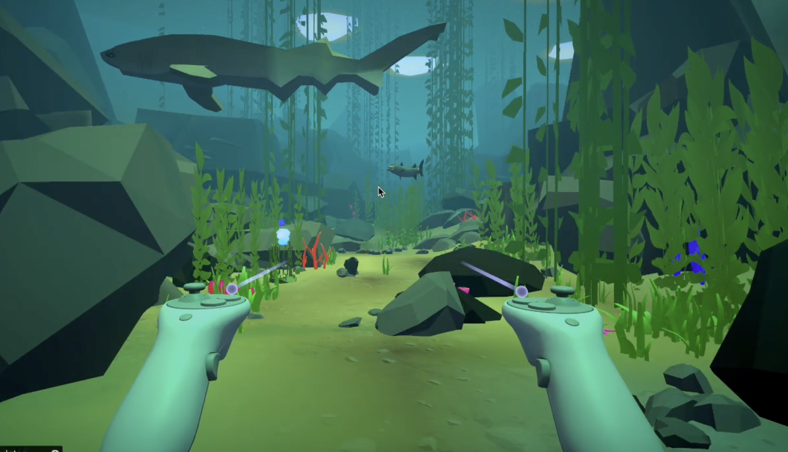

Gameplay & Systems
Unity architecture, C# gameplay systems, Utility AI, responsive interactions, debugging, optimization, and collaborative Git workflows.
GAMEPLAY PROGRAMMER · TECHNICAL ARTIST
I'm Joaquin Arredondo, a computer scientist and interactive artist developing games, immersive VR experiences, real-time graphics, procedural tools, and emotionally intelligent NPC systems.

01 / ABOUT
My work exists at the intersection of computer science, visual art, music, and interactive storytelling.
I began exploring game development through Minecraft, world building, server communities, and modding. That curiosity grew into a broader interest in gameplay programming, computer graphics, technical art, and the systems that make digital worlds feel responsive and alive.
At Cal Poly, I studied Computer Science and Computing for Interactive Arts. My projects have taken me from custom OpenGL renderers and psychologically grounded Game AI to VR spellcasting, marine simulation, procedural tools, animation systems, and large Unity environments.
Unity architecture, C# gameplay systems, Utility AI, responsive interactions, debugging, optimization, and collaborative Git workflows.
Houdini tools, Maya modeling and animation, procedural workflows, materials, lighting, VFX, and environment design.
C++, OpenGL, GLSL shaders, lighting models, terrain rendering, GPU instancing, transformation matrices, and performance-conscious visual systems.
Emotional NPCs informed by psychological frameworks, including personality, emotion, relationships, memory, needs, and Utility AI.
02 / SELECTED WORK

01VR DEVELOPMENT · UNITY · MAYA
An immersive VR experience designed to teach players about biodiversity surrounding an offshore research site.
The experience needed believable marine predators, responsive animation, and clear gameplay behavior within an existing VR project.
I modeled, rigged, weight-painted, animated, and integrated a shark and barracuda while building Unity animation controllers and supporting AI behavior.
Maya, IK systems, deformers, Unity Animator, C#, XR Toolkit, audio systems, Agile development, and iterative client reviews.
A research-driven Unity simulation exploring how psychologically grounded systems can produce more emotionally believable NPC relationships.
A stylized nautical dungeon crawler featuring large environments, enemy encounters, progressive difficulty, and performance-conscious scene management.
A VR spellcasting puzzle experience combining interactive magic, environmental storytelling, visual effects, procedural assets, and responsive puzzle systems.
A collection of graphics projects exploring the rendering pipeline, shaders, procedural terrain, lighting, instancing, materials, animation, and optimization.
03 / EXPERIENCE
California Polytechnic State University
Mentored more than 30 students across introductory computing and game-development courses. Supported debugging, grading, Unity, C#, JavaScript, game mechanics, game feel, and iterative design.
SIGGRAPH
Supported conference operations while learning directly from professionals working across computer graphics, interactive technology, animation, games, and virtual production.
New Haven Unified School District
Maintained and distributed more than 5,000 computers while coordinating with district leadership to improve technology operations and device organization.
04 / LET'S CONNECT
I am interested in gameplay programming, technical art, computer graphics, immersive development, and creative technology opportunities.